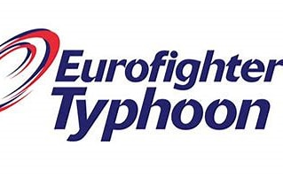

Rosa Elvira Parrilla
Linkedin: Rosa Elvira Linkedin Email: relviraparrilla@gmail.com
Datos presentación
- Educación
-
Ingeniero Superior de Informática Universidad Politécnica de Madid
Grado en Psicología Universidad Nacional de Educacion a Distancia
Master GIS Online ESRI España
Titulo B2 Inglés y A2 Alemán Escuela Oficial de Idiomas
- Licencias y Certificaciones
-
PRINCE2® Practitioner Certificate in Project Management
EXIN
Cloud Computing Foundation
EXIN
ITIL v3 Foundation Certificate in IT Service Management
EXIN
PRINCE2 Foundation Certificate in Project Management
EXIN
OCP (Oracle Certifed Professional
Oracle
- Experiencia
-
Canal de Isabel II Titulado Superior
- Labores de Jefe de Proyecto en aplicaciones propias de Canal de Isabel II:
- GAMBA: Aplicación de la gestión geográfica de todos los elmenots de Canl de Isabel II/li>
- VYCARIO: Mapa
- GAYTA:
 Eurofihgter Typhoon Fusion Middleware Specialist
- Jefe de Proyecto
- Experto en Fusion Middleware
- Experto en Oracle
Braionra S.L. System Engineer Colaborations
- Working in H.A. environments (Oracle Database and Fusion Middleware).
- Installation of Oracle Database and Oracle SOA on RCA environments.
- Weblogic and database administration
Oracle System Engineer Colaborations
- Diversas posiciones durante 18 años dentro de la compañia
- Parte del equipo de desarrollo de Oracle Support
- Trabajo con grandes cuentas
- Hobbies
- Buceo, Padel, Patines, Golf
- Referencias
- Disponible bajo petición